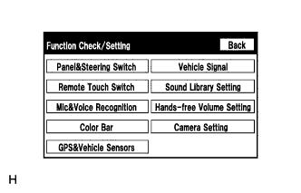

PARKING ASSIST MONITOR SYSTEM > CALIBRATION |
| ADJUST PARKING ASSIST MONITOR SYSTEM |
This parking assist monitor system can be set from the diagnostic screen of the display and navigation module display.
If the following operations are performed, it is necessary to perform adjustments and checks on the diagnostic screen.
| Part Name | Operation | Adjustment Item | Proceed to |
| Spiral with sensor cable sub-assembly |
| Steering angle neutral point |
Click here
|
| Steering angle setting |
Click here
| ||
| Spiral with sensor cable sub-assembly | Replacement | Steering angle neutral point |
Click here
|
| Steering angle setting |
Click here
| ||
| Parking assist ECU | Replacement | Parking assist ECU initialization | Parking assist ECU initialization |
| Suspension, tires, etc. | Suspension or tire replacement resulting in vehicle height change | Rear television camera optical axis (Camera position setting) | Back Camera Position Setting |
| Side television camera optical axis (Camera position setting) |
Click here
| ||
| Rear television camera assembly |
| Rear television camera optical axis (Camera position setting) | Back Camera Position Setting |
| PARKING ASSIST ECU INITIALIZATION |
Preparation for adjustment
Park the vehicle with the steering wheel centered.
Set a target bar for optical axis adjustment of the rear television camera assembly.
| Area | Specification |
| A | 970 to 980 mm (3.18 to 3.21 ft.) |
| B | 1995 to 2005 mm (6.55 to 6.58 ft.) |
| *a | Vehicle Center |
| *b | Target Bar for Back Camera Adjustment |
| *c | Vehicle End |
| *d | Front Side |
Start diagnostic mode.
 |
Select "Function Check/Setting" on the Service Menu screen.
|  |
Select "Camera Setting" on the Function Check/Setting screen.
Select "NEXT" on the SIGNAL CHECK screen.
SIDE CAMERA POSITION SETTING (Click here)
SIDE VERIFY MODE (w/ Side Monitor System) (Click here)
SIDE VERIFY MODE (w/ Multi-terrain Monitor) (Click here)
STEERING ANGLE SETTING
Perform the STEERING CENTER MEMORIZE operation.
Perform the MAX STEERING ANGLE MEMORIZE operation.
 |
BACK CAMERA POSITION SETTING
Perform the roll angle adjustment.
Perform the vertical and horizontal position adjustment.
Select the "NEXT" button on the BACK CAMERA POSITION SETTING screen.
BACK VERIFY MODE
Check that A and the target adjustment bar are overlapping.
Selecting "OK" will return the screen to the Service Menu screen and complete the adjustment.
Finish diagnostic mode.
| BACK CAMERA POSITION SETTING |
Preparation for adjustment
Park the vehicle with the steering wheel centered.
Set a target bar for optical axis adjustment of the rear television camera.
| Area | Specification |
| A | 970 to 980 mm (3.18 to 3.21 ft.) |
| B | 1995 to 2005 mm (6.55 to 6.58 ft.) |
| *a | Vehicle Center |
| *b | Target Bar for Back Camera Adjustment |
| *c | Vehicle End |
| *d | Front Side |
Start diagnostic mode.
|
Select "Function Check/Setting" on the Service Menu screen.
Select "Camera Setting" on the Function Check/Setting screen.
 |
Select "BACK CAMERA SETTING" on the MODE SETTING screen.
Select "NEXT" on the SIGNAL CHECK screen.
|
BACK CAMERA POSITION SETTING
Perform the roll angle adjustment.
Perform the vertical and horizontal position adjustment.
Select the "NEXT" button on the "BACK CAMERA POSITION SETTING" screen.
BACK VERIFY MODE
Check that A and the target adjustment bar are overlapping.
Selecting "OK" will return the screen to the Service Menu and complete the adjustment.
Finish diagnostic mode.